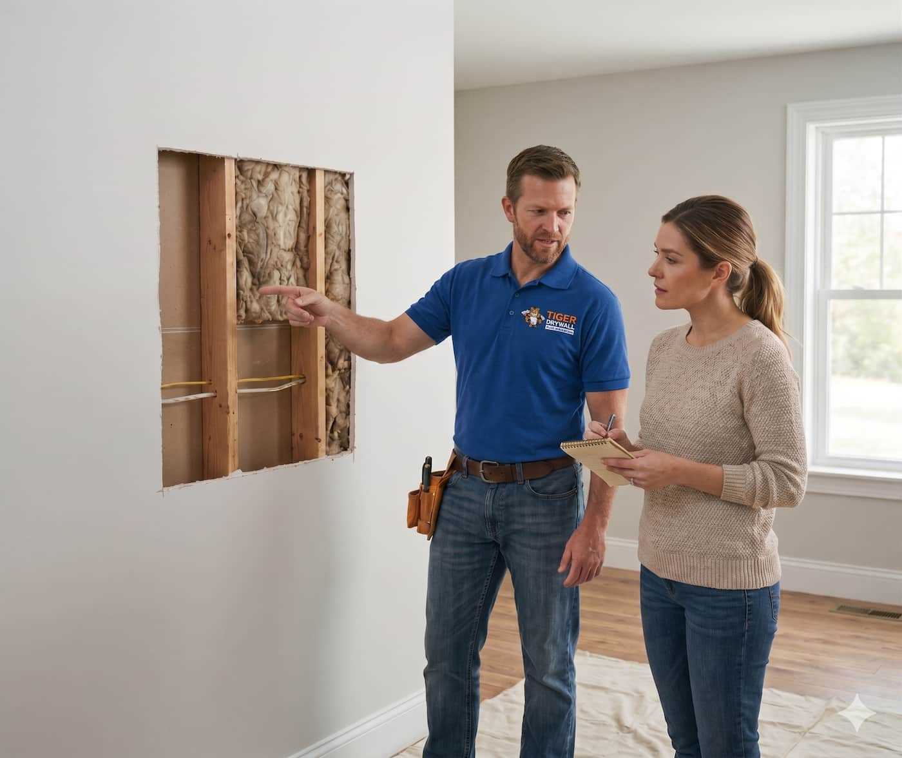
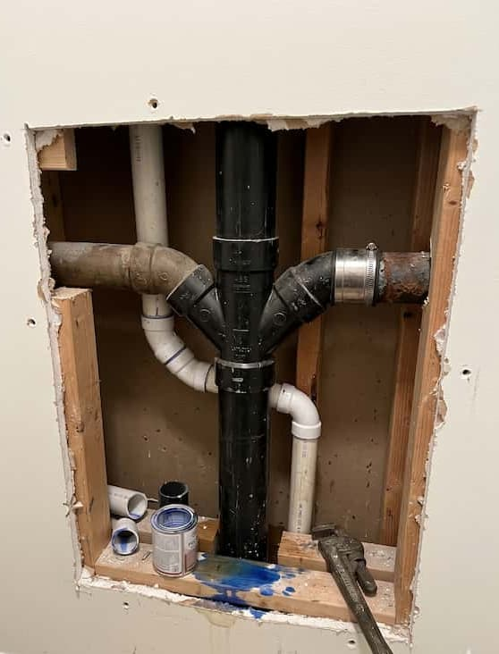
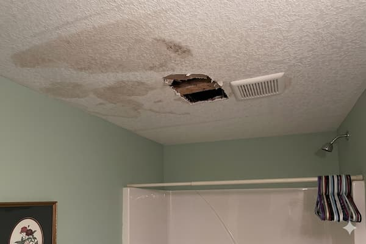
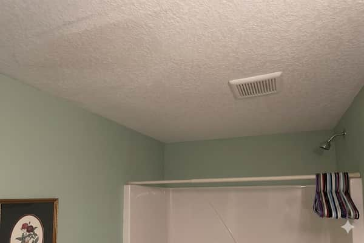
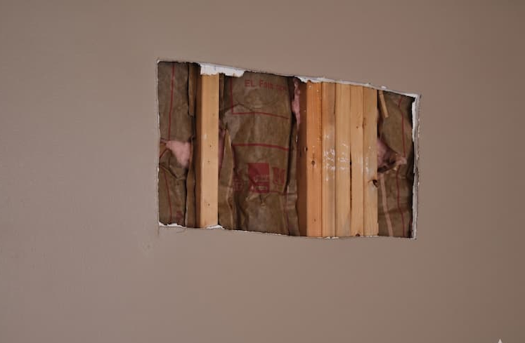
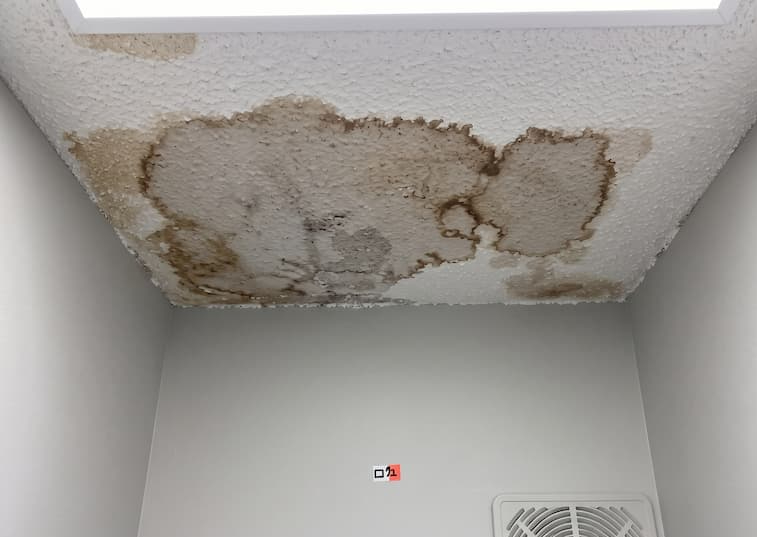
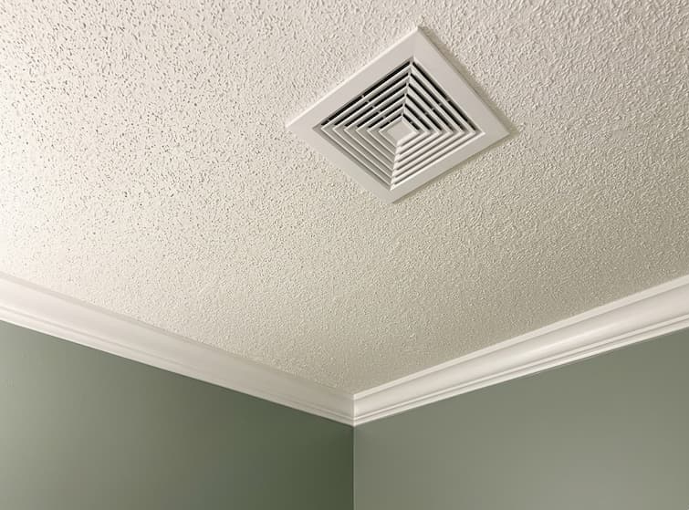
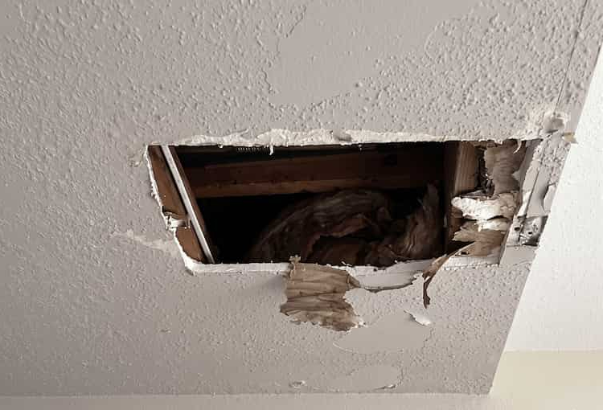

Enter your details. We respond in under 1 hour.
We are not finished until you are completely happy with the repair.
Fast, reliable service. Most small to medium repairs are completed in one day.
Fully licensed and insured experts who respect your home and keep it clean.
Expert patching and texture blending so the damage truly disappears.
See the Tiger Drywall difference. We take pride in making damage disappear completely so you can't tell it was ever there.

BeforeRepaired, mudded, sanded, and texture-matched perfectly to the surrounding knockdown finish.

Before
AfterDamaged drywall removed, new panel installed, taped, and skim-coated to a flawless smooth finish.
From door handle holes to major water damage restoration, we handle the repairs that general contractors won't touch.
Get A Quote
Door knobs, furniture moving, or anchors — we patch any size hole and blend the finish seamlessly into the surrounding wall.
Get Estimate
Ceiling and wall damage from plumbing leaks — properly cut out, dried, repaired, and paint-ready with no lingering stains.
Get Estimate
Orange peel, knockdown, smooth, or popcorn. Our experts match your existing finish exactly for truly invisible results.
Get Estimate
Sagging panels, joint tape issues, and water stains — overhead ceiling work done neatly and safely every time.
Get EstimateWhen you hire specialists rather than general handymen, you get guaranteed, invisible results every single time.
We don't split our attention across twenty trades. Drywall repair is all we do, which means you get a dedicated specialist, not a generalist.
Our technicians take pride in results you can't see. We provide expertly blended, smooth, and paint-ready walls with no telltale patches.
You get a clear, honest quote before we start. No surprises, no hidden materials fees, and no hourly rate that spirals out of control.
We show up on time, protect your floors and furniture, clean up the worksite fully, and leave only flawless walls behind.
From your first call to a flawless finish — here's exactly what to expect.
Call or fill out our form. We respond same day — usually within the hour.
A technician assesses the damage, and gives you a flat-rate quote.
Work begins on your schedule. Most repairs finish in one visit.
We clean up, you inspect, and we leave you fully satisfied.
"Tiger Drywall fixed a large hole in my hallway from a door handle and you genuinely cannot tell anything was ever there. The texture matching was spot-on. Incredibly professional."
"Fast, clean, and honest. They quoted me a fair price, showed up on time, and finished in under two hours. I've already referred them to three neighbors."
"After water damage from a burst pipe, we had multiple sections to repair. They handled everything seamlessly. The ceiling looks brand new and the price was very reasonable."
Don't look at that hole another day. Get a free, flat-rate quote.
Get My Free Estimate